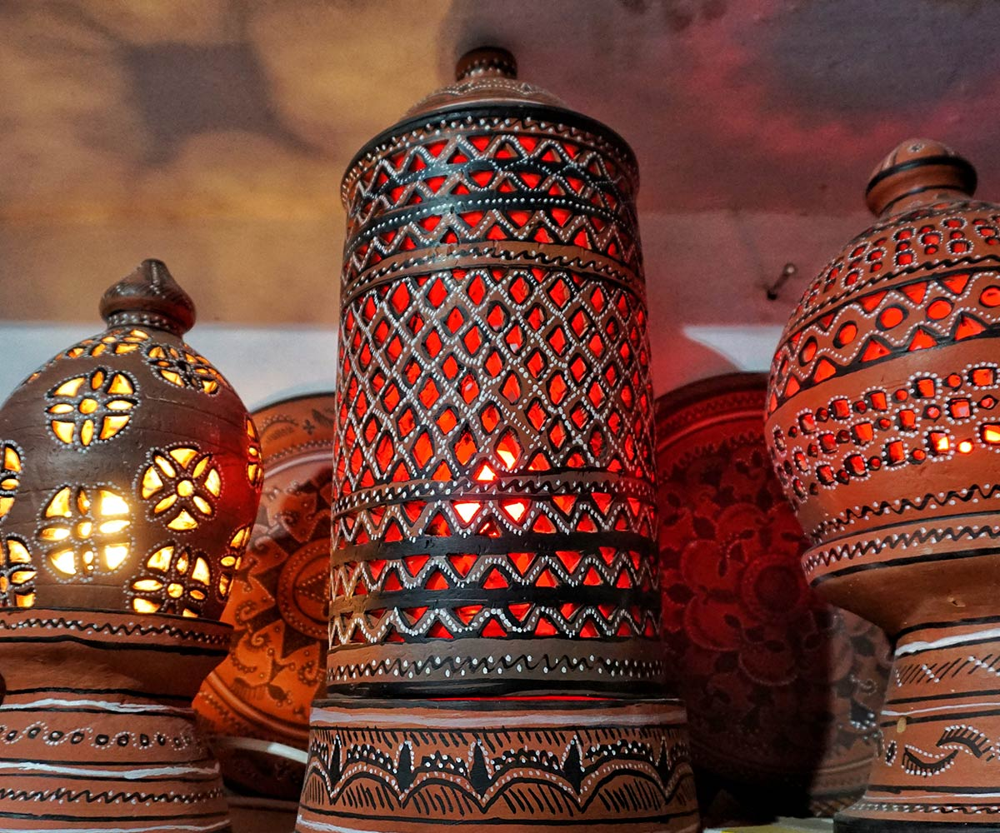
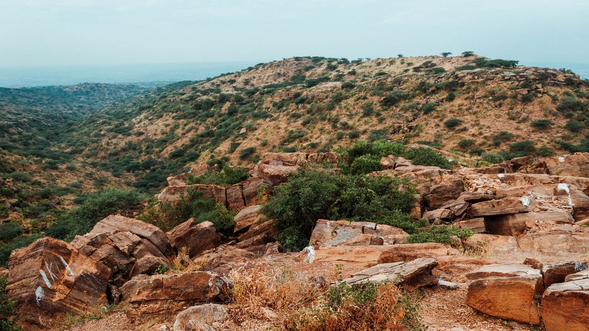

White Rann of Kutch
The surreal white salt desert, glowing under the moonlight, is the highlight of the Rann Utsav.
READ MORE »Bhuj
The cultural hub of Kutch, Bhuj is home to palaces, museums, handicrafts, and vibrant markets.
READ MORE »
Mandvi Beach
A peaceful beach destination known for its golden sands, water sports, and Vijay Vilas Palace nearby.
READ MORE »
Kutch Desert Wildlife Sanctuary
One of the largest wildlife sanctuaries in India, home to flamingos, wild asses, and desert foxes.
READ MORE »

Kutch Handicrafts
World-famous embroidery, tie-dye, and mirror work make Kutch a paradise for craft lovers.
READ MORE »

Kalo Dungar (Black Hill)
The highest point in Kutch, offering panoramic views of the White Desert, especially at sunset.
READ MORE »